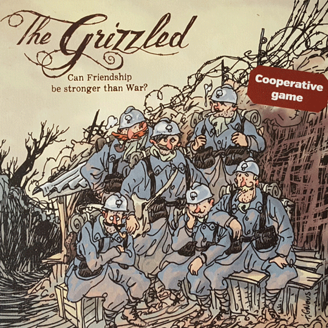
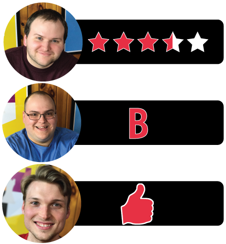

This week Board Crazy reviews The Grizzled, a card game designed by Fabien Riffaud and Juan Rodriguez, and published by Sweet Games and CMON Limited. The Grizzled is an challenging co-op game for 2-5 players, in which players try to survive all of the threats and hard knocks that come with trench warfare. Check out our reviews of The Grizzled below!

D reviews The Grizzled
 (Author’s
note: this review is meant to accompany our gameplay video and will not
go in-depth on the game’s rules. If you’re interested in learning how
the game is played, please watch the video. It’s not bad.)
(Author’s
note: this review is meant to accompany our gameplay video and will not
go in-depth on the game’s rules. If you’re interested in learning how
the game is played, please watch the video. It’s not bad.)
As a setting for entertainment, World War I had been relatively underutilized for a long time. All wars are hell, of course, but there’s a particular bleakness to “The Great War”. It was unsexy, if you will, seemingly lacking the charismatic leaders and fascinating stories that make World War II, Vietnam, and the Cold War such popular settings for works of fiction. Recently, however, it seems that the creative minds of the world have started to realize the mostly untapped dramatic potential of World War I. In the last couple of years, Battlefield 1 and Wonder Woman have been hits in video games and film, respectively, while The Grizzled, originally released in 2015, is one of the best tabletop games to make use of the setting.
Gustave Bidau – One of the friends fighting in the war. As shown in the top right corner, he has luck against winter threats.
To be fair, there’s not a ton of competition when it comes to World War I tabletop games. 1999’s Paths of Glory is probably the gold standard in this category, unless you count Diplomacy, which uses early 20th century Europe as a setting but doesn’t incorporate any specific elements of the war itself. Still, The Grizzled is a very fine game which incorporates the war in a fresh way. Rather than being a war game, the players are in control of individual soldiers who (per the rulebook) are friends, just trying to survive the war together. Some of these characters are based on real individuals – ancestors of the game-makers – and there is a definite solemnity and sense of respect that emanates from the game. It almost feels wrong to call it “fun,” but I will . . . because it is.
It’s a pleasantly simple game at its core: you draw cards and then you play those cards. The strategy comes from hand management and knowing when it’s time to press your luck. There’s a good sense of tension that comes whenever a card is played, as the actions of your fellow soldiers will usually affect the choices you make. Almost all of the cards make things worse for you and your fellow soldiers, so your goal is usually to just make things as un-bad as possible. And there’s a genuine sense of joy on the one or two occasions per game when something actually goes well.
The monument card – draw cards from this pile into the trials pile. If all of the cards in this pile are drawn, the game is over.
The game’s art also deserves special mention. It was done by the late Bernard Verlhac, AKA Tignous, who was one of the twelve victims of the Charlie Hebdo shooting shortly before The Grizzled’s release. His work manages to give warmth and personality to the game’s characters while also evoking the hardships that were ever-present on the battlefield. It really improves the game, in my opinion, and it’s a damn shame that he isn’t able to lend his talents to the world any longer.
The Grizzled plays quickly (maybe 30 minutes) and that’s a good thing because you will probably lose and want to try again immediately. In our video, it wasn’t easy to stop recording and admit defeat instead of starting up a second game. In fact, I would probably say it’s too hard, even on the standard difficulty. There’s quite a bit of randomness involved and it’s hard to beat the game without a good bit of luck. Even if you play your cards perfectly you still might lose in the end, which, while perhaps thematically appropriate, is still a flaw that sours an otherwise really enjoyable experience. So it’s certainly not a perfect experience, but it’s still one I would easily recommend if you’re looking for a good, quick cooperative game. And that’s without mentioning the (quite good) expansion, which we’ll get to some other time.
D’s Rating: Three and One-Half Stars out of Five.
Will reviews The Grizzled
 If
you’ve read any of my previous reviews, then you know that I appreciate
tabletop games that feature a simple set of rules and a briefer
playtime. It’s not because I think the more complicated games have less
merit; they’re objectively as well if not better designed. But at the
end of the day, I prefer a game that won’t stress me out or force me to
think too much. That being said, it should come at no surprise that a
game like The Grizzled really appealed to me. It’s cooperative, it’s
easy to understand, and an average session ranges from 30-45 minutes.
Tack on the World War I theme, and you have a card game that’s a real
winner in my book.
If
you’ve read any of my previous reviews, then you know that I appreciate
tabletop games that feature a simple set of rules and a briefer
playtime. It’s not because I think the more complicated games have less
merit; they’re objectively as well if not better designed. But at the
end of the day, I prefer a game that won’t stress me out or force me to
think too much. That being said, it should come at no surprise that a
game like The Grizzled really appealed to me. It’s cooperative, it’s
easy to understand, and an average session ranges from 30-45 minutes.
Tack on the World War I theme, and you have a card game that’s a real
winner in my book.
This is a support token. This means you would be supporting the person to your right. It also demonstrates the charming and cartoonish artwork.
Not only do I like the way The Grizzled plays, I also really love its theme. As a history nerd, I was excited to play a game that nails the horrors of The Great War without being overly macabre or gruesome. As interesting as World War I is, it’s also easily the most horrifying war that I’ve ever studied, so I commend the designers (Fabien Riffaud, Juan Rodriguez) for finding the proper balance of misery and fun. It isn’t just the gameplay that contributes to the theme; the artwork does as well. Personally, I love the artwork of The Grizzled – it really nails what I imagine a cartoon of The Great War would look like. The art feels like something that could have existed in that era, which is really impressive. The aesthetic of this game is one of my favorite things about it.
As I said, the gameplay effectively evokes the emotions of World War I without being overwhelming, but how does it do this? Well, the basic thrust of The Grizzled involves playing cards that feature a variety of weather and combat conditions. For example, you might have a card in your hand that shows a winter weather environment coupled with an artillery barrage. Both the snow and the artillery are bad on their own, but they won’t be enough to kill the soldiers each player is utilizing. Instead, missions (rounds) are failed when three of any one condition is played on the table. For instance, if there are three winters, the mission is failed and all of the played cards are returned to the deck. Fail enough missions and the trials deck will grow too large, which will end with the entire squad dead and the war lost. The prospect of failing a mission is truly terrify, and my group really strategized about which cards to play and when. The dread we felt when there were multiple pairs of conditions on the table pales in comparison to what the actual soldiers felt during World War I. Still, The Grizzled was evoking a similar sense of hopelessness and despair, which illustrates the clever design.
The ultimate threat card! This card has one of each threat on it.
On the other hand, surviving a mission leads to a feeling of relief and happiness. At any time, a player can withdraw from a mission, which means they no longer have to play any of the cards in their hand. If all the players withdraw before three of any one kind of card is played, the mission is a success and the played cards are permanently discarded from the game. If you clear enough cards this way, you can win the war and survive The Grizzled. This leads me to my main gripe with this game – beating it is really frickin’ hard. You almost have to have the perfect draw every round or you have little to no chance of winning. I understand that being merciless fits with the theme, but I’m not convinced that it serves the game well here. After all, if the game can only be won when the cards play out a certain way, how does that help the game’s replayability? It doesn’t – it hurts it because you know there’s only a handful of ways The Grizzled will unfold.
At the end of the day, the positives outweigh the negatives when it comes to this game. The artwork and gameplay really invoke the desperation and dreariness of The Great War, and I cannot praise that aspect of The Grizzled enough. I will always enjoy surviving a mission and dread failing one, and the more I lose, the more I want to press on. However, I’m very aware that this game will only play out a few different ways, and I worry that if I succeed too much, I’ll stop caring about it. For now though, I really like The Grizzled and look forward to diving back into it when I get a chance. In other words, I recommend this one.
I give it a: B
Graham reviews The Grizzled
 There
are tons of board games out there that use war as a theme, which makes
sense because it puts you scenarios where you have to think
strategically. Up until The Grizzled, I never saw a war-themed game that
tries to put you in the mind of the everyday soldier. The Grizzled is a
co-op card game about World War I trench warfare. As I just mentioned
though, it’s very unique because instead of commanding armies or
building resources, it’s about what the soldiers went through both
mentally and physically in trench warfare. This uniqueness is what
really sets it apart from most other games. However, there are a few
other things I really appreciated about The Grizzled.
There
are tons of board games out there that use war as a theme, which makes
sense because it puts you scenarios where you have to think
strategically. Up until The Grizzled, I never saw a war-themed game that
tries to put you in the mind of the everyday soldier. The Grizzled is a
co-op card game about World War I trench warfare. As I just mentioned
though, it’s very unique because instead of commanding armies or
building resources, it’s about what the soldiers went through both
mentally and physically in trench warfare. This uniqueness is what
really sets it apart from most other games. However, there are a few
other things I really appreciated about The Grizzled.
Lazare Bonticeli – Another one of the friends. He has good luck against the whistle threat.
First, the quickness of the game is very refreshing, even though we just played Jump Drive, another very quick game. We tend to play games that take 2-3 hrs to setup and complete. The Grizzled can be setup and played in about 30 min, so it’s not uncommon for us to attempt this game a few times in a row. This is helped by the number of decisions each player has to make. There aren’t too many things to think through, so decisions are made quickly, which makes the game feel even shorter. This is different than Jump Drive, where the game was played in a very short amount of time, but it felt way too long between turns. For The Grizzled, the quick decisions and short game time really help make it exciting. However, this leads to a minor issue: since there aren’t too many decisions to make, the game can get stale after several playthroughs.
Another thing I like about the game is that it’s pretty challenging. This is one of only a handful of co-op games I’ve played, and I went into it thinking it was going to be somewhat simple. That’s not the case at all, which is a really good aspect considering the theme of the game. Every time you feel like you’re in the clear and you might actually win this one, the game immediately brings you back to reality. Through several sessions, we have not yet beaten The Grizzled. You really have no room for error, and you absolutely can’t take any unnecessary risks.
An example of a trap card. When one of the trap cards are played, another card is drawn from the trials pile and placed in no man’s land.
There is one little dynamic I noticed in the game that I found frustrating but simultaneously necessary – The Grizzled has a “press your luck” aspect to it. I don’t mind when luck is involved in games. In fact, there are scenarios where I want luck involved, but a majority of the game is driven by luck. The tricky part about this is that it’s necessary to have the random draws of cards because that adds important challenges and decisions for the players. For instance, the game has “trap cards”. When these cards are played, another trials card (threat cards) is drawn from the top of the trial pile and placed in the trench. The question is – should a trap card be played if it’s possible to lose the mission on the card that’s drawn? I understand it’s a difficult balance to find. On the one hand, you want the players to be able to make decisions quickly, but on the other hand – how much luck is too much? Overall, The Grizzled is a very enjoyable game. Despite some of the challenges in balancing luck and play speed, I thought the designers made a very distinct and compelling game. We plan on playing the expansion, The Grizzled: At Your Orders!, so hopefully that fixes some of the issues I mentioned in this review. I give the The Grizzled one thumb up.

Leave a Reply
You must be logged in to post a comment.